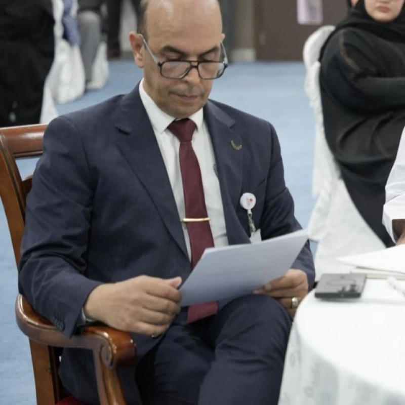

Computer Vision
Machine perception, visual feature extraction and intelligent interpretation of complex visual data.
I am Dr Mohammad Al-Azawi, Associate Professor of Artificial Intelligence and Deputy Dean for Academic Affairs, Research and Innovation at Gulf College, Oman. My work connects AI research, academic excellence and institutional transformation.

My academic career combines artificial intelligence, computer vision and data science research with institutional leadership in academic affairs, research, innovation, quality enhancement and strategic development.
A major strand of my research examines symmetry and saliency as computational cues for identifying abnormalities in medical images, particularly brain MRI.
Alongside research, I contribute to academic strategy, programme enhancement, quality and accreditation, institutional effectiveness, research culture, partnerships and innovation.
My research investigates how computational intelligence can use structural, visual and adaptive signals to solve applied problems in image analysis, security, finance and education.
Machine perception, visual feature extraction and intelligent interpretation of complex visual data.
AI techniques for identifying abnormal structures in medical imagery, particularly brain MRI.
Bilateral symmetry as a computational cue for anomaly identification and explainable visual assessment.
My work explores the premise that the human brain is broadly bilaterally symmetrical and that local asymmetry may provide a meaningful computational signal for abnormality detection.
Read featured paper ↗For academic collaboration, research, institutional development and professional engagement.